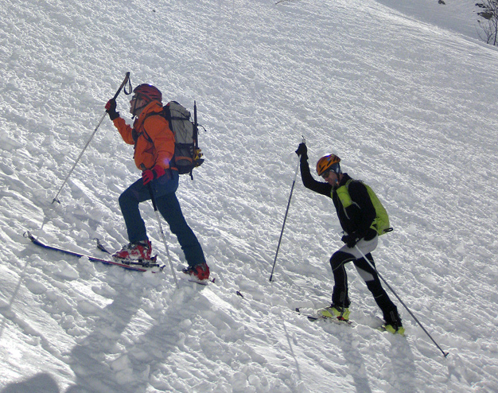

INTRODUCCIÓN
A pesar de ser España uno de los países más reconocidos por sus playas y paisajes cálidos, España cuenta también con una gran variedad de estaciones de esquí, específicamente 38 estaciones repartidas entre Aragón, Asturias, Cantabria, Castilla y León, Cataluña, Galicia, Andalucía, Comunidad de Madrid y La Rioja. Algunas pistas de esquí son más profesionales y grandes, mientras que otras son más pequeñas y cuentan con más zonas de debutantes.
Name
Name
Name
MEJORES PISTAS DE ESQUÍ EN ESPAÑA
BAQUEIRA-BERET: Baqueira-Beret es considerada la mejor estación de esquí del país. Esta se encuentra en El Valle de Arán (Lleida, Cataluña). Esta estación cuenta con 112 pistas y 36 remontes. De estas 112 pistas, podemos encontrar 6 pistas verdes, 43 pistas azules, 46 pistas rojas y 17 pistas negras. Esta estación fue inaugurada el 6 de diciembre de 1964. Esta estación es recomendada para esquiadores más expertos, aunque tiene una amplia sección de pistas para debutantes. Otra ventaja de esta estación es que la interconexión con las pistas hace que los desplazamientos entre los sectores sean fáciles. Al ser uno de los destinos más visitados entre los esquiadores y amantes de los deportes de montaña, cuenta con una amplia oferta de hoteles, apartamentos y restaurantes para los visitantes. Otro aspecto bien reconocido de esta estación es la asistencia en pistas en caso de tener un accidente. FORFAIT: En cuanto al precio del forfait, Baqueira tiene el más caro de España, siendo el precio de 160€ al día.
SIERRA NEVADA: Sierra Nevada es una de las pistas más populares del país, está situada en la provincia de Granada, a 31km de la capital. La estación cuenta con 134 pistas que se reparten en 20 pistas verdes, 50 pistas azules, 53 pistas rojas y 7 negras, además, podemos encontrarnos también con 30 remontes. Esta estación está bastante equilibrada en cuanto a las dificultades de sus pistas, lo que significa que es ideal tanto para esquiadores profesionales como para debutantes. Otra ventaja de la estación es que gracias a todo el turismo que recibe la estación, esta cuenta con una gran variedad de restaurantes, tiendas y alojamientos que hacen de tu estancia un viaje perfecto y muy cómodo para hacer en familia. FORFAIT: Hablando del precio del forfait, podríamos considerar que Sierra Nevada tiene un precio medio y bastante asequible. El precio de forfait para adultos (16 a 59 años) es de 51€-52€, para niños de 6 a 15 años y adultos con discapacidad el precio es de 33€-34€, y por último, el precio es para Senior (60 a 69 años) es de 41-41,50€.
CERLER: Cerler es una pista de esquí situada en la provincia de Huesca y cuenta con 72 pistas y 20 remontes. Las 72 pistas se dividen en 10 verdes, 19 azules, 27 rojas, 15 negras y 1 itinerario. Además de ser la estación más alta del Pirineo Aragonés. En cuanto a los remontes, encontramos: 6 cintas transportadoras, 4 telesquís y 10 telesillas. Cerler es famosa por tener la pista más grande de España. Esta tiene una longitud de 9 km de pista la cual empieza desde el Gallinero. Hablando sobre las opiniones de la gente sobre esta estación, cabe resaltar que muchas personas comparten la opinión de que las escuelas que ofrece la estación son bastante buenas. Otro aspecto interesante sobre Cerler, son sus maravillosos alrededores, resaltando entre ellos el Valle de Benasque, con increíbles vistas y actividades familiares que realizar. Para los profesionales, Cerler ofrece también su gran variedad de disciplinas para subir la adrenalina como cronoslalom, boardercross, snowspeed, speedriding o actividades con motos de nieve.
CANDANCHÚ: Candanchú es la estación de esquí más antigua de España, siendo inaugurada en 1928. Esta estación se encuentra en el Pirineo aragonés, en la provincia de Huesca, cerca de la frontera con Francia. Esta estación cuenta con un total de 57 pistas, divididas en 12 verdes, 14 azules, 18 rojas y 13 negras y 22 remontes entre pistas. En cuanto a reseñas de los turistas, muchos afirman que es una estación con un esquí muy cómodo y familiar. Además de contar con pistas divertidas y con la cantidad justa de público, lo que hace de la experiencia del esquí algo más ameno y entretenido para todas las edades. A parte de ser considerada una pista ideal para la iniciación en el esquí gracias a su variedad de pistas. Para los más profesionales, esta estación ofrece el Tubo de la Zapatilla, un complicado descenso entre rocas solo apto para los más expertos. Se recomienda visitar sus alrededores y pueblos cercanos llenos de belleza, encanto y paisajes de cuento.
FORMIGAL-PANTICOSA: Formigal-Panticosa es una estación de esquí ubicada en Huesca, en el Pirineo Aragonés al lado de la frontera con Francia. Esta estación cuenta con un total de 147 pistas, coronándose como la estación con las pistas de España. Entre estas 147 pistas podemos encontrar, 42 negras, 52 rojas, 34 azules, 14 verdes y 5 itinerarios. También cuenta con 37 remontes para uso de los visitantes. Cuenta con una gran variedad de actividades para hacer en familia y numerosas actividades para los más pequeños de la casa. Además, en ambos sectores (Formigal y Panticosa) podemos encontrar servicios de guardería. Después del esquí, Formigal-Panticosa ofrece un increíble apres-ski en el bar Marchina donde podrás disfrutar de fiestas temáticas y Djs.
ASTÚN: Astún es una estación que se encuentra en el Valle de Astún, en los Pirineos Aragoneses. En Astún, podemos encontrar un total de 60 pistas, 5 verdes, 18 azules, 23 rojas y 10 negras, aparte de 10 itinerarios 'freeride' y 15 remontes. Una ventaja de esta pista es la disponibilidad de 150 cañones de nieve repartidos en 14,5km de nieve, lo que hace posible el esquí en temporadas menos frías del año. En cuanto a algún dato curioso sobre esta estación, podemos mencionar el dato de que fue candidata a los Juegos Olímpicos de Invierno de 1998, 2006 y 2010. También podemos encontrar la oferta de Skipass, el cual es un pase que nos ofrece la oportunidad de esquiar en Astún y en Candanchú con un descuento sobre los precios oficiales.

New York
Fri 27 Nov 2016
Praesent tincidunt sed tellus ut rutrum sed vitae justo.

Paris
Sat 28 Nov 2016
Praesent tincidunt sed tellus ut rutrum sed vitae justo.

San Francisco
Sun 29 Nov 2016
Praesent tincidunt sed tellus ut rutrum sed vitae justo.
CONTACT
Fan? Drop a note!
Phone: +00 151515
Email: mail@mail.com
 PINCHA AQUí
PINCHA AQUí